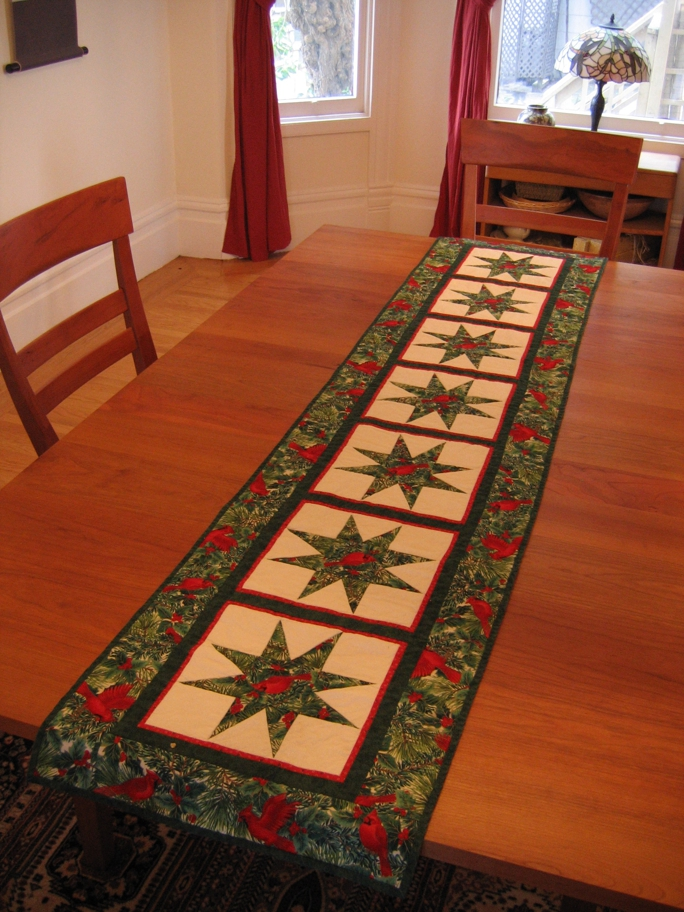

<--Previous Up Next-->

The same year I made Cardinals for Christmas because the autumn leaves were so well received. Both can be used for a season rather than a day which makes them even more useful.